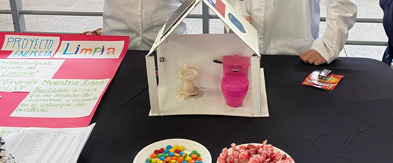
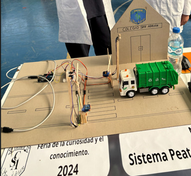
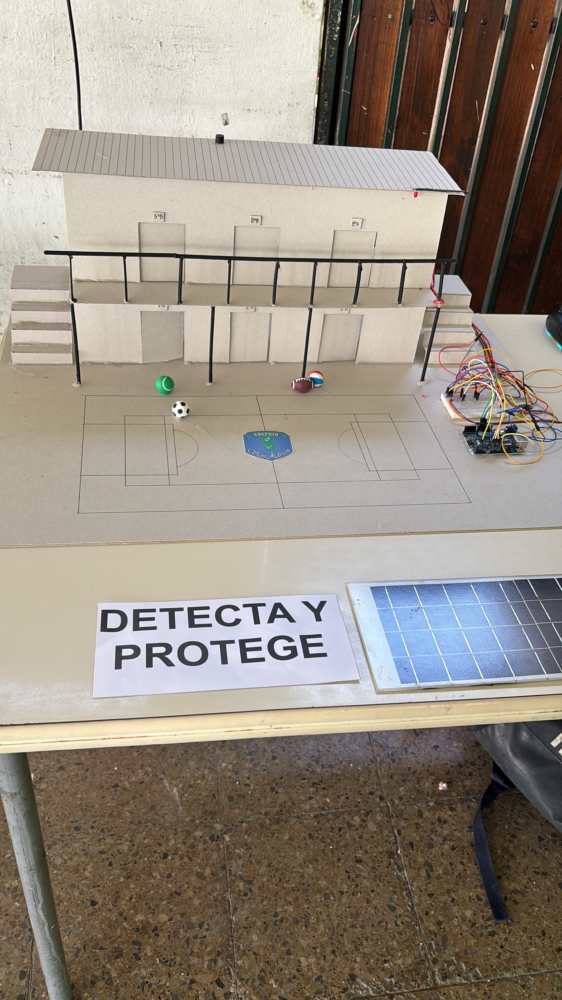

El proyecto más reciente aparece destacado arriba. Debajo quedan los proyectos anteriores ordenados por año para mostrar cómo han ido creciendo mis ideas.

Proyecto escolar · 2023
Maqueta de baño ecológico con sistema de ahorro de agua y reciclaje de residuos. Utiliza Circuitos, Protoboard, Bomba de agua y Pulsador.
Objetivo: representar una solución simple para cuidar el agua.
Aprendizaje: conexión de circuitos básicos y control de una bomba de agua.
 @gatochente
@gatochente

Prototipo con Arduino · 2024
Maqueta de paso peatonal con barreras automáticas y semáforo inteligente. Utiliza un temporizador para avisar a peatones y vehículos, activando las barreras y cambiando el semáforo en consecuencia. Utiliza Arduino, Protoboard, LEDs y Servomotores.
Objetivo: mejorar la seguridad de peatones y vehículos en cruces.
Aprendizaje: coordinación entre LEDs, servomotores y tiempos de respuesta.
@gatochente

Sistema de alerta · 2025
Maqueta de sistema de seguridad ante sismos. Utiliza sensores de movimiento y vibración para detectar actividad sísmica. Utiliza Arduino, Protoboard, Sensores de Vibración y LEDs.
Objetivo: alertar de forma visual cuando se detecta vibración.
Aprendizaje: lectura de sensores y diseño de respuestas automáticas.
@gatochente